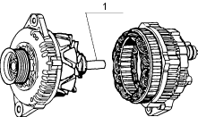
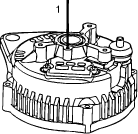

Alternator and Vacuum Pump Reassembly
Alternator
For reassembly, follow the disassembly procedures in reverse order, paying attention to the following points.
Spline cap

- Tightening torque for each threaded part.
- Front and rear sides of assembly.

- Spline cap
- Be sure to start assembly after spline cap (see above drawing) into the spline of rotor shaft. If no spline cap is provided, conduct the work with plastic tape wound around the spline.
If the work is conducted without protecting the spline, oil seal maybe damaged. Therefore, never fail to observe the workshop standard.
- The rear side of ball bearing has a ring inserted in the eccentric groove of outer race and so the protruding part of the ring sticks out of the outer race. Start assembly after turning the ring to a position where protrusion is minimised. Further, check the bearing case of rear cover assembly and if there is a abnormality, replace with a new rear cover assembly.

- Insert a pin into the rear cover assembly from its outside to push brush into brush holder. Then assemble the rear cover.
(Pin diameter: 2 mm)

- Pin